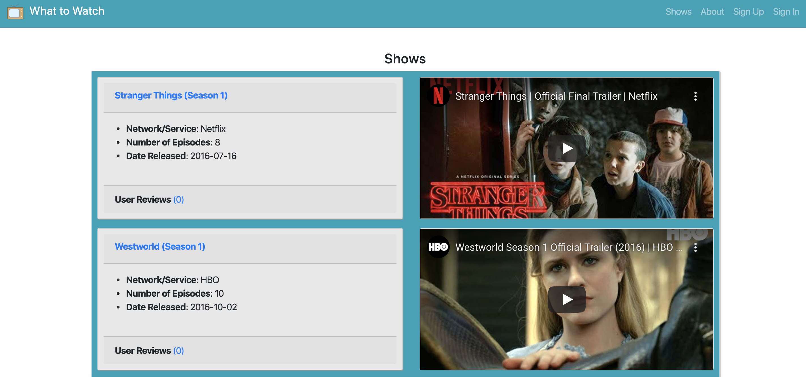

Sean Lahiff
Quincy, MA 02171 · (339) 237-0846 ·
sean243446@gmail.com
I am a software developer with a background in operations and system implementations. I'm passionate about providing users elegant, technical solutions that make their lives easier!
Experience
Software Engineering Fellow
General Assembly - Boston, MA
- Completed a 3-month (500+ hour), full-time immersive software engineering program at General Assembly's Boston Campus.
- Created 4 web applications (3 full stack) over the duration of the course, utilizing Git and GitHub for version control.
- Gained experience with a number of popular languages, frameworks, and technologies such as Node.js, Rails, React, and much more.
October 2019 - January 2020
Talent Operations Senior Associate
Wayfair - Boston, MA
- Served as the primary system administrator for the tools & technologies that the Talent Acquisition team used.
- Provided user support for the 300+ member TA department via multiple channels (Slack, email, ticking system) as well as created and maintained SOP documentation.
- Played a key role in 7-month implementation of a new Applicant Tracking System and contributed to design of APIs built to sync data between various tools/systems throughout the recruiting and hiring process.
- Worked with adjacent Talent teams (Talent Engineering, HRIS, Talent Operations) to design and test API integrations between multiple disparate systems (Internal Headcount/Requisition Tracker tool, ATS, HRIS).
- Liaised with the Talent Analytics team to help establish practices and processes that enforced data integrity and facilitated department-wide reporting.
July 2017 - October 2019
Merchandising Operations Specialist
Wayfair - Boston, MA
- Programmatically quality assured thousands of products a week.
- Continually iterated upon and streamlined the department's QA process by implementing VBA macros and SQL scripts.
- Spent 6 weeks in Berlin, DE customizing the QA process to incorporate EU-specific conditions and checks as well as providing extensive training to the teams.
July 2014 - June 2017
Education
Software Engineering Immersive Program
General Assembly
Ocotber 2019 - January 2020
University of Massachusetts Amherst
B.A. - English Literature
September 2009 - May 2013
Skills
Programming Languages & Technologies
Projects

"What to Watch?" App (Capstone Project)
"What to Watch?" is a full stack web application that empowers users to find TV shows they may be interested in by reviewing show information, user comments, and embedded trailers all within the app.
"Project Tracker" App (Project 2)
In many organizations, it's natural for communication in departments to become siloed. The PT app helps by giving transparency into projects across departments; showing information like project owner, status, and when it was last updated.

Tic-Tac-Toe (Project 1)
Challenge a friend in a classic game of tic-tac-toe!